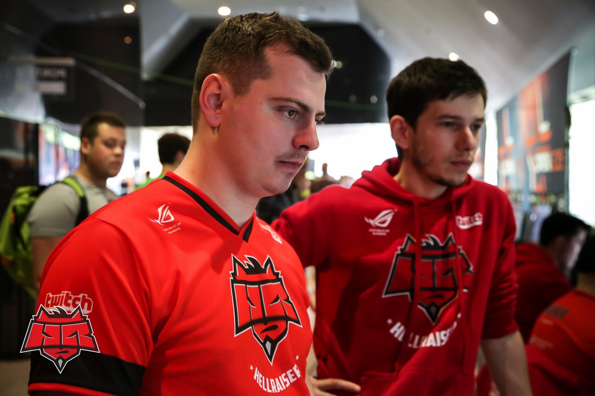
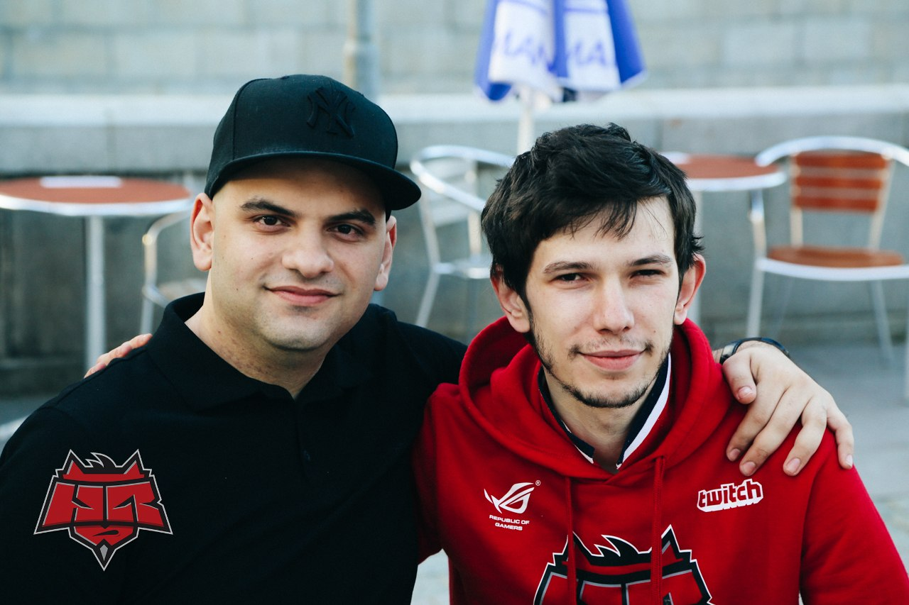
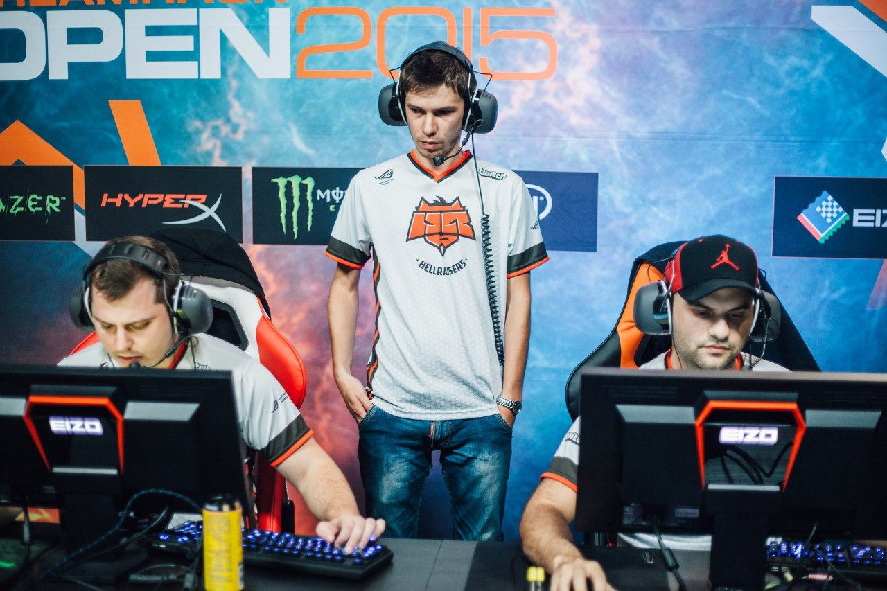

После всей лихорадки состава, после серьезных перемен: потери костяка, приобретения европейских ребят и приходом в команду s1mple в роли stand-in, мы вроде как оклемались и даже обыгрывали tier-1 команды в важных лигах. Затем лихорадка продолжилась, на помощь нам пришел schneider, и мы начали все заново: новые позиции, эмоции, повадки. Мы опять вроде бы набрали какую-то форму, сыграли феерическую игру с Virtus.pro на GO:CL и вышли в финал.
 HellRaisers [2:1]
HellRaisers [2:1]  Virtus.pro (14:16 @overpass, 21:17 @mirage, 16:10 @cache)
Virtus.pro (14:16 @overpass, 21:17 @mirage, 16:10 @cache)
Оставалась всего одна игровая неделя до зимних каникул, но она была крайне важна, включая в себя стыковочный матч с командой Flipsid3 Tactics за лигу ESL/ESEA, финал GO:CL, игры за выход на LAN лиги Game Show и так далее. И вот тут случилось что-то невероятное, а может быть и предсказуемое: мы проиграли абсолютно все важнейшие матчи на той неделе и началось это все с поражения от Dignitas.
HellRaisers [2:3]  Dignitas (13:16 @mirage, 16:14 @cache, 21:16@overpass, 11:16 @inferno, 5:16 @cobblestone)
Dignitas (13:16 @mirage, 16:14 @cache, 21:16@overpass, 11:16 @inferno, 5:16 @cobblestone)
Дальше произошли весьма неприятные истории: после этой недели sсhneider нас весьма подвел, решив покинуть команду, тем самым поставив нас в очень затруднительное положение: СНГ квалификации на Minor уже были окончены, а европейского парня у нас попросту не было, и нас терзали смутные сомнения по поводу того, что делать, как быть и кого брать в состав на тот или иной турнир.
Мы все еще ждали ответа от MLG, так как одна из команд хотела участвовать в Last Chance-квалификации и нам, теоретически, могли дать слот на СНГ-Minor. Тем временем было 29-е число, в списке кандидатов был всего один, никому не известный игрок из СНГ, и примерно 15 европейцев, но тестировать кого-либо, учитывая, что отборы начинались уже 4-го числа, времени особо не было. В итоге я остановился на Zero — молодой парень из Словакии, который показал весьма достойную игру на единственном сыгранном праке, и решение о том, какие отборы мы будем играть, было принято.

4.01.2016
Вот тут началась главная дискотека: за 50 минут до первого матча на евро-отборах мы получили согласие и возможный инвайт в СНГ дивизион, но для этого нам нужен был СНГ-игрок. Проблема с СНГ-игроком в том, что попросту не хотели дисквалифицировать одну из команд тем, что заберем у них игрока, а проблема европейских квалификаций, в свою очередь, в том, что это single-elimination best-of-one на 512 команд. Внимание: БЕЗ АНТИЧИТА, и шанс того, что ты можешь проиграть одну рандомную карту очень велик. Все это посеяло очень серьезные сомнения в наши головы и мы задумались: было очень много аргументов за и против, но в итоге было принято решение играть европейскую, страшную квалификацию.
Вся ситуация усложнилась еще и тем, что мы лишились своих компьютеров в последний момент, нам пришлось играть из другого места. Второй проблемой было то, что координировать команду было поручено мне, и делать это мне пришлось аж по двум мониторам, которые я видел перед собой, то есть — мониторы ANGE1'a и kUcheR'a. А все потому, что сервис FaceIT не поддерживает функцию тренерского слота на сервере. Первую квалификацию мы отыграли весьма уверенно, хотя и не без историй с ошибками от организаторов, которые внесли путаницу, но принесли извинения и на следующий день все пофиксили.
HellRaisers [1:2]  CG (12:16 @dust2, 16:4 @mirage, 6:16 @overpass)
CG (12:16 @dust2, 16:4 @mirage, 6:16 @overpass)
Про этот матч я напишу отдельно. Мы его проиграли, и пусть мне хоть 20,000 человек скажет, что там было все нормально, я с этим не соглашусь по гроб жизни. Эти парнишки нечисты на руку, и очень жаль, что они не оказались с нами в группе на LAN-финалах Minor.
Игрок за всю свою карьеру против даже среднестатистических команд играл в огромном минусе — с рейтингом примерно 0.5-0.7, а на выигранной у нас карте у парня внезапно оказалось почти 2? Я вас умоляю…
Итог: расстроенные чувства, печаль, понимание того, что есть лишь один шанс и придется заново пройти этот страшный путь, и дай бог дойти до игры за квоту, которую еще и нужно выиграть, а играть до нее еще три изнурительных дня с такими же командами, которой мы проиграли, и с такой же боязнью проиграть, ведь это могло означать конец всему.

Первый день мы отыграли просто блистательно и вообще без каких-либо проблем, как, собственно, и второй, что меня не то чтобы удивило, а порадовало: все было спокойно, слажено, сдержанно, без лишних эмоций. Красиво и уверенно, без ошибок, которые допускать в bo1 попросту нельзя.
Матч за квоту…
Мы играли с неизвестной французской командой, и это пугало, как и в прошлый раз. Единственное, что я смог узнать, и это чуть успокоило: Натан (NBK) сказал мне, что не знает кто это, но видел как-то давно этих ребят на местном лане. Матч мы в итоге выиграли 2:0 и это, лично меня, сильно успокоило. Теперь у нас появится время подготовиться, состав вроде как неплох, и в нем все меня полностью устраивают, качественно выполняя свою работу. Будем играть…
HellRaisers [2:0]  MIINLATE (16:11 @cache, 16:12 @dust2)
MIINLATE (16:11 @cache, 16:12 @dust2)
10.01.2016. Квалификация на DH Leipzig 2016.
Мы не возлагали больших надежд на эту квалификацию, но все равно очень хотели победить, желая получить любой опыт LAN перед Minor. Сетка была непроста: сначала были онлайнеры из aTTaX. Первая карта против них была ночным кошмаром, мы были не выспавшимися, уставшими от прошлых дней, поэтому все пять человек в команде, как в футбольных демотиваторах, просто потерялась на карте и найти там каждого из игроков было действительно трудно. Мы выдохнули, сказали, что это лишь начало и победили в двух следующих картах очень уверенно. Дальше мы встретились с нашими неуступчивыми друзьями из Болгарии — командой E-Frag.net. Они удивили нас пиком и баном, забрали первую карту, на второй за первую сторону тоже, мягко говоря, не пошло и четыре взятых раунда на cobblestone за KT давали слабоватый шанс на победу, но мы знали, что наша атака при взятой пистолетке действительно может… И что у нас хватит запаса раундов для того, чтобы взять 12 очков и удивлять соперника действиями каждый раз. Единственной задачей было заставить оппонента ошибиться, зарыть экономику форс-баями и так далее, с чем мы и справились. 12:3 в ответ и итоговая победа 16:14 на второй карте стала своим родом хоть и в онлайне, но боевым крещением нашего состава. Третью карту мы тоже забрали без проблем, хотя это и был не типичный для нас Mirage.
HellRaisers [2:1]  ALTERNATE aTTaX @bo3 (7:16 @cobblestone, 16:10 @dust2, 16:7 @overpass)
ALTERNATE aTTaX @bo3 (7:16 @cobblestone, 16:10 @dust2, 16:7 @overpass)
HellRaisers [2:1] E-Frag.net @bo3 (9:16 @dust2, 16:14 @cobblestone, 16:7 @mirage)
Игру с Dignitas за квоту мы проиграли лишь потому, что мы попросту еще не готовы выигрывать. За все это время, из-за квалификаций, мы максимум дважды сыграли overpass. Нам просто не хватало опыта игры вместе и привычки тиммейтов друг к другу для того, чтобы реализовывать преимущество: кто-то шел… кто-то стоял… И так было всю сторону, и дело не в тактиках, а лишь в реализации преимущества, чего нам сделать не просто не удалось — мы это дело очень сильно провалили. Вот над этим нам и нужно работать в первую очередь, для чего нужно очень много играть.
HellRaisers [0:2] Dignitas @bo3 (10:16 @cobblestone, 14:16 @overpass)

Плывем дальше…
Как только мы, казалось бы, выдохнули от этого очень долгого марафона, были анонсированы такие же открытые отборочные к Катовице. Два турнира по одному слоту в каждом и, как назло, еще и за день до Minor. Наша подготовка от этого неслабо пострадает, ведь выпадет 4 игровых дня, но мы уже привыкли и, на самом деле, с хорошим настроением начинаем нашу подготовку! Увидимся на Minor в конце месяца. Спасибо всем тем, кто был с нами на протяжении этих долгих дней квалификации. Надеюсь, мы сможем ощутить вашу поддержку в Европе, ведь наши игроки хоть и не все из Украины, но с украинскими флагами мы там будем одни.
Болейте за HellRaisers!
Комментарии (0)